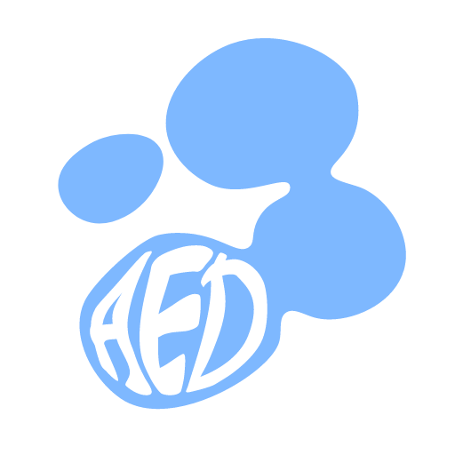
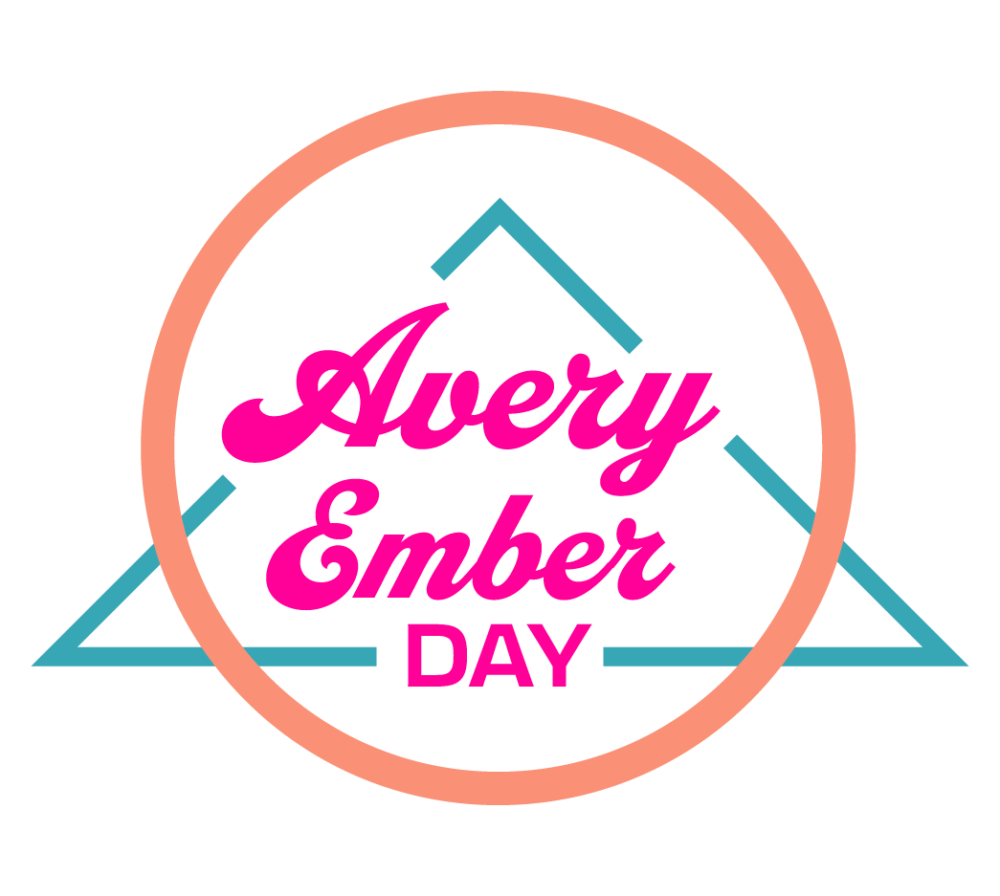
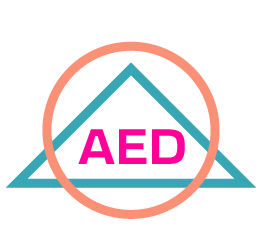
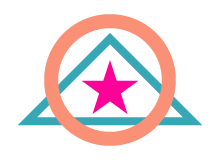

Brand Identity Guide
Avery Ember Day
Where vision finds form.
Every project begins as a conversation. Listening closely and designing with care turns an idea into a clear, honest visual identity that people remember.
Contents
Brand Mission
Thoughtful, well-crafted design that gives each client's vision clarity, purpose and character, so they can be proud of their brand and see their ideas come to life.
Where vision finds form.
Values and Personality
Every client's vision is personal. Listening comes first: their style, their story, their goals. The finished design looks and feels like them.
Every project starts with optimism. A tricky brief is a chance to grow, and a hopeful outlook helps clients see new possibilities. The goal is work that goes beyond what they hoped for.
Each project is a chance to do better than the last. Steady practice and a love of the craft keep the work sharp, skilled and full of heart.
Hard problems get patience and fresh ideas. Each project is seen through with steady determination.
Care and attention spot a client's needs early, often solving a problem before it shows up.
Plans stay flexible. Feedback shapes each round of the design until the final piece matches the client's vision.
Every collaboration feels welcoming and supportive, a cozy space where clients feel heard, valued and confident.
Voice and Tone
How Avery Ember Day speaks, in words and in tone, is set out on the Brand page of the website, so every message and piece of copy sounds like the same studio.
Brand page, Brand Voice and Tone: averyemberday.com/portfolio/brand
Moodboard
Soft, bright and a little dreamy. Soap-bubble shimmer, round shapes that lean on each other, cool blue light with pops of neon and gold, and cozy dark rooms.
Logo
The bubble logo is a cluster of soft blue bubbles, with the initials A E D hand-lettered in the lowest one. It comes in two versions: the Primary logo, with the initials, and the Icon Mark, the bubbles alone. Each comes in blue, black and white.

Clear Space
Give the logo room to breathe. Keep a clear space around it, free of text, images and other graphics. The unit is the width of the small bubble on the left, which is 30% of the logo's full width.
Shaded area: keep this clear on every side. One unit equals the small bubble's width.
Sizes and Color Variations
Primary
Smallest size: 64px. Below that, the AED lettering stops reading.
Icon Mark
Smallest size: 24px. Below that, the bubbles begin to merge.
Logo Usage
Color
The palette is soft and bright. Brand Blue leads, with Accent, Neon and Gold for pops, and the spectrum for shimmer. Values are the dark-theme base, the brand's home colors.
Brand Blue
Main brand color, headings and accents
Accent
Links, focus and highlights
Neon
Small pops of light
Gold
Warm highlights and calls to notice
Dark BG
Main background for the blue and white logo
Light BG
Main background for the black logo
Logo Blue
The bubble logo's own color
Print note. Neon and Accent are brighter than ink can print. For print, use the closest CMYK match and check a proof before a large run. CMYK values are pending a proof.
Typography
Three typefaces, each with its own job, keep every page clear and consistent.
Display
Sriracha
Big, friendly moments: the brand name and page titles. Short words, large sizes.
Headings
Outfit
Section titles and labels, usually SemiBold (600). Light to Bold (300 to 700).
Body
Inter
Paragraphs, captions and everything people read at length, usually Regular (400). Light to SemiBold (300 to 600).
Type Reference
Sriracha
Outfit Light, 300
Outfit Regular, 400
Outfit Medium, 500
Outfit SemiBold, 600
Outfit Bold, 700
Inter Light, 300
Inter Regular, 400
Inter Medium, 500
Inter SemiBold, 600
Visual Summary
Where vision finds form.
Color
Type
Sriracha display
Outfit SemiBold headings
Inter Regular body
Brand Applications
Waiting for the business card design
Card front and back, print size and QR code go here once the design is finished.
Brand Applications
One clean layout for letters, invoices and other documents. The header holds the Primary logo with plenty of white space.
Brand Applications
A repeating logo pattern for events and presentations. The tile scales to any size and keeps the brand present while staying in the background.
Brand Applications
A simple, accessible email signature with the logo and contact links. It works in every major email app, on phone and desktop.
Avery Ember Day
averyemberday@gmail.com
averyemberday.com
Footnote
The 2025 college guide's brand, which the bubble brand replaces.



The retro logo was a coral circle and a teal triangle around "Avery Ember" in a pink script, with "DAY" in caps. It carried the brand through its first year.
First iteration
The first personal brand mark: a triangle, chosen for its balance and clarity, with the top-left corner removed to make a simple icon that scales well.
Second iteration
The triangle became a right-angled form inside a circle, a steadier, more balanced mark. The contrast made it stronger and easier to read at every size.
Bubble logo (current)
Soft, round shapes and a single calm blue. It keeps the AED initials and the idea of a full mark and a small icon, and feels friendlier and lighter at every size.
Brand Applications
Social Media and Icons
Favicon and app icons
The Icon Mark, sized for the smallest spaces. Simple round shapes and strong contrast keep it recognizable down to 24px.
Social media post